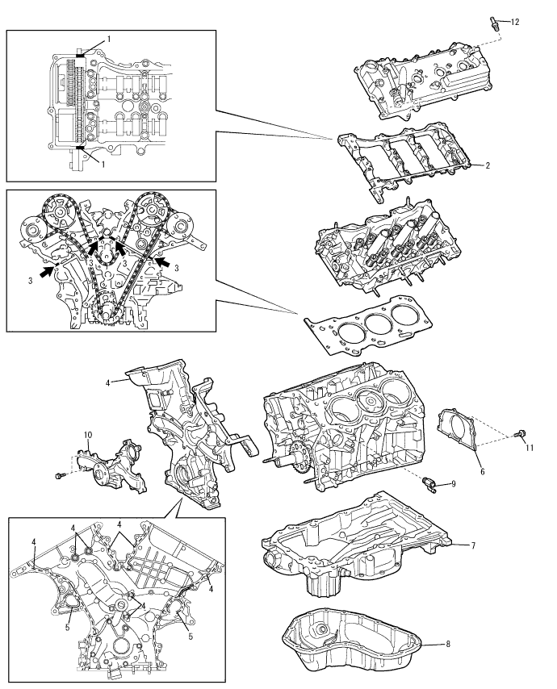

FIPG Application Points (2GR-FE) Application |
| 1. Handling of FIPG (Formed In Place Gasket) |
Before applying seal packing, thoroughly remove any old seal packing from the sealing surfaces, bolts and bolt holes, and clean the sealing surfaces with white gasoline and brake cleaner.
Using a shop rag, clean the contact surfaces of each part and its mating part so that they are free of oil, water and dirt.
Apply FIPG to the part being installed.
Apply to the specified width with neither too much nor too little, and always overlap the start and end of the application.
After assembly, be careful not to move the parts.
Install the parts within 3 minutes of applying.
Do not add coolant, fill oil or start the engine until the specified time has elapsed after assembly.
| 2. Application Points, FIPG Used (and Standing Time) |
| Illustration No. | Seal Packing Application Point | Seal Packing Used | Standing Time after Assembly |
|---|---|---|---|
| 1 | Camshaft Housing and Timing Chain Cover x Cylinder Head Cover | Seal Packing Black | 2 hours |
| 2 | Cylinder Head x Camshaft Housing | ↑ | ↑ |
| 3 | Cylinder Head x Cylinder Head Gasket | ↑ | ↑ |
| 4 | Timing Chain Cover x Cylinder Head, Camshaft Housing and Cylinder Block | ↑ | ↑ |
| 5 | Timing Chain Cover x Cylinder Block | Seal Packing 1282B | ↑ |
| 6 | Cylinder Block x Rear Oil Seal Retainer | Seal Packing Black | ↑ |
| 7 | Cylinder Block and Timing Chain Cover x Oil Pan | ↑ | ↑ |
| 8 | Oil Pan x Oil Pan NO.2 | ↑ | ↑ |
| 9 | Cylinder Block x Water Drain Cock | Adhesive 1344 | 1 hours |
| 10 | Timing Chain Cover x Water Pump | ↑ | ↑ |
| 11 | Rear Oil Seal Retainer x Cylinder Block | Adhesive 1324 | 1 hours |
| 12 | Ventilation Valve x Cylinder Head Cover LH | ↑ | ↑ |
| 3. FIPG (Application Points) |
